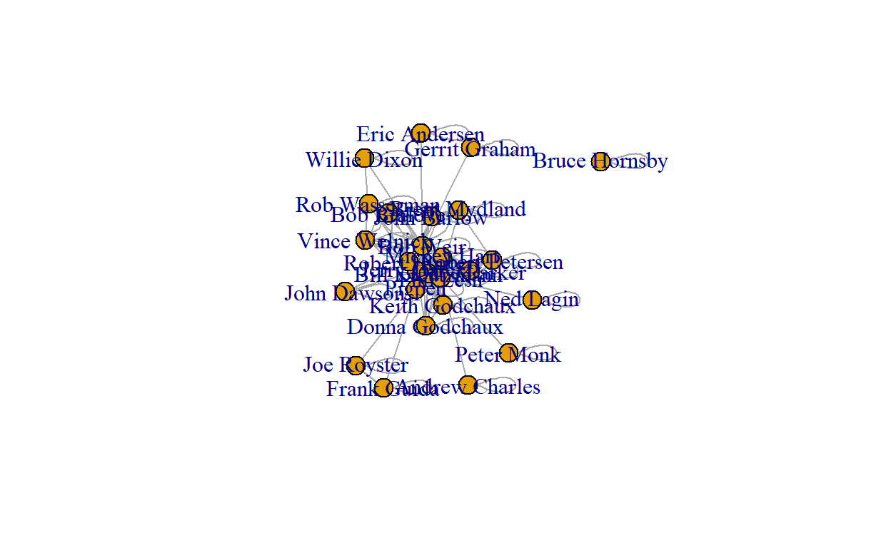
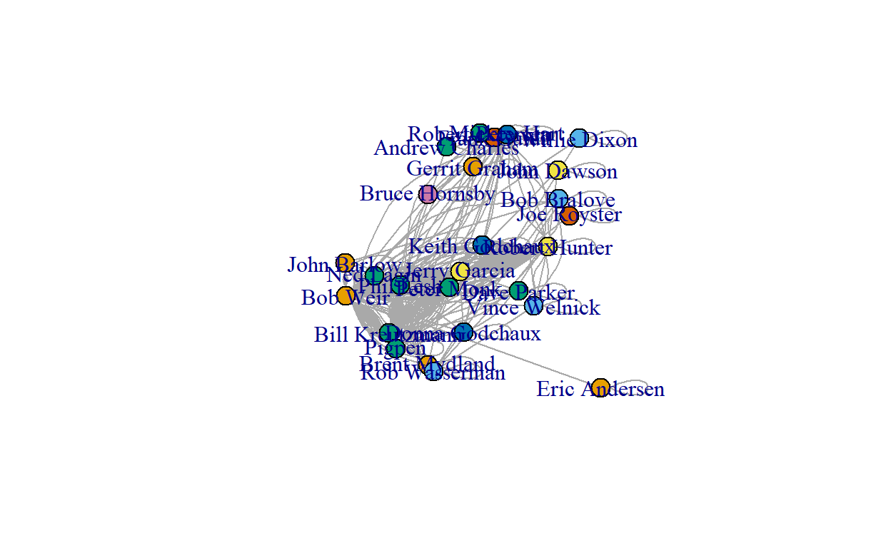
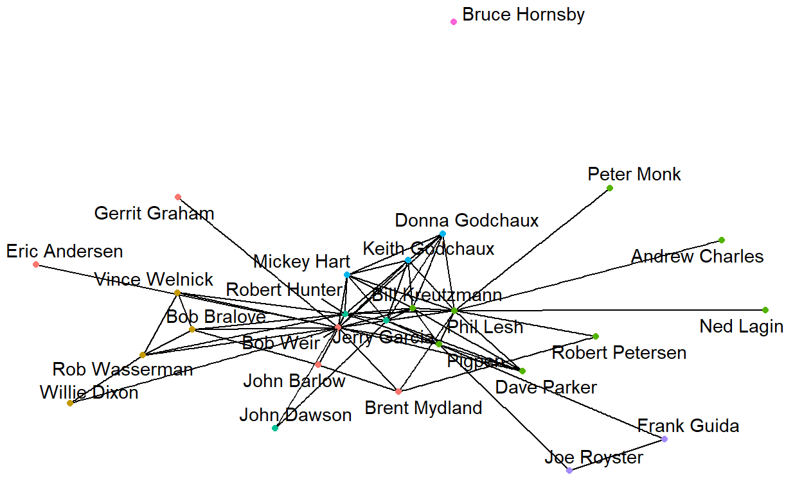
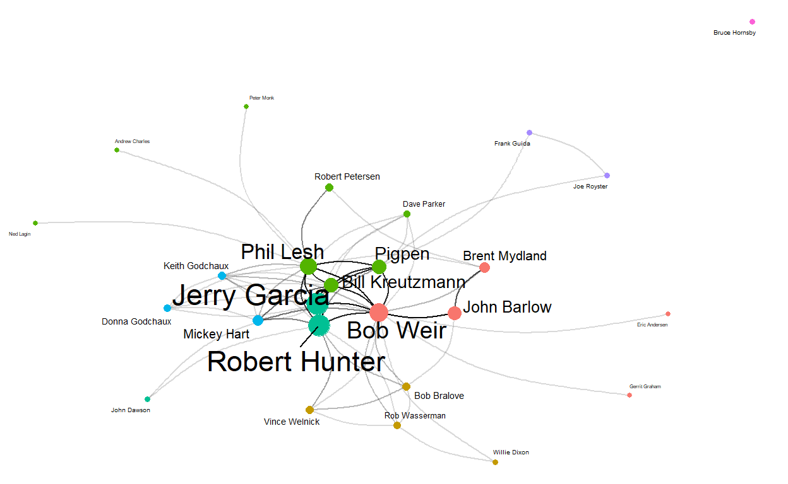

Final Project for DACSS 697E course ‘Social and Political Network Analysis’
For my project, I am using the Grateful Dead song writers data set that I am using in this series of posts to examine the network features of the co-writers of original Grateful Dead songs.
The data set consists of the contributors to the original songs played by the Grateful Dead over their 30-year touring career that I compiled.
There are 26 songwriters that contributed to the songs played over the course of the Grateful Dead history, resulting in 26 nodes in the dataset.
There are a total of 183 (updated and still under review!) unique songs played, and the various combinations of co-writing combinations are represented in a binary affiliation matrix.
I have not weighted this version of the data; I have considered using various measures as network weights, but in the end they have all been attributes and not weights. Unless there is a new metric that rises to the forefront of my analysis, this network will continue to be unweighted.
In this example, I used a node list where unique IDs are numbers which correspond to the name of a songwriter.
The edgelist is in a separate spreadsheet where the first two columns are the IDs of the source and the target node (songwriter ID), regardless of whether the network is directed, for each edge. Each row contains an observation of a connection between writers for a given song, and since there are multiple collaborations, there may be multiple rows of writer combinations for a given song ID. If there was only one writer on a song, that songwriter’s ID is indicated in both the source and target column for that song.
The following columns are edge attributes. In my edgelist, I have the two songwriters representing the co-writing relationship in columns “1” and “2”, the song ID in column “3”, the song name in column “4”, and the number of times the corresponding song was played live is indicated in column “5”.
I have NOT utilized the number of times the song was played live as a network weight at this point. Additionally, this edgelist format is not the ideal format, but it is the first step in the process I am working through to utilize different methods of working through the data. In the next post, I will use the data in the form of an affiliation matrix.
Loading the dataset and creating the network to begin my analysis:
Inspecting the first 8 columns of the data structure in the affiliation matrix format:
dim(gd_matrix)
[1] 26 183gd_matrix[1:10, 1:4]
Alabama Getaway Alice D Millionaire Alligator Althea
Eric Andersen 0 0 0 0
John Barlow 0 0 0 0
Bob Bralove 0 0 0 0
Andrew Charles 0 0 0 0
John Dawson 0 0 0 0
Willie Dixon 0 0 0 0
Jerry Garcia 1 1 0 1
Donna Godchaux 0 0 0 0
Keith Godchaux 0 0 0 0
Gerrit Graham 0 0 0 0Now I can create the single mode network and examine the bipartite projection. After converting the matrix to a square adjacency matrix, I can look at the full matrix.
I can also call the adjacency matrix count for co-writing incidences between certain songwriters, such as between writing partners Jerry Garcia and Robert Hunter (78) and between John Barlow and Bob Weir (21).
[1] 26 26gd_projection[1:10, 1:4]
Eric Andersen John Barlow Bob Bralove Andrew Charles
Eric Andersen 1 0 0 0
John Barlow 0 26 1 0
Bob Bralove 0 1 3 0
Andrew Charles 0 0 0 1
John Dawson 0 0 0 0
Willie Dixon 0 0 0 0
Jerry Garcia 0 0 0 0
Donna Godchaux 0 0 0 0
Keith Godchaux 0 0 0 0
Gerrit Graham 0 0 0 0gd_projection["Jerry Garcia", "Robert Hunter"]
[1] 78gd_projection["John Barlow", "Bob Weir"]
[1] 21Converting network data into igraph object using the “graph_from_incidence_matrix()” function gave me all songwriters and songs as total vertices. Graphing after the bipartite projection allowed a more accurate network.
set.seed(11)
#gd_igraph <- graph_from_incidence_matrix(gd_matrix, directed = FALSE)
gd_igraph <- graph.adjacency(gd_projection,mode="undirected") #igraph object
Coercing directly from the original affiliation matrix kept giving
the error, “Error: loops is FALSE, but
x contains loops.” I tried using the “intergraph”
package, but it cannot coerce bipartite igraph networks. After the
bipartite projection, I was able to create the statnet object as
well.
set.seed(11)
#gd_statnet <- as.network(gd_affiliation,
#directed = FALSE,
#bipartite = TRUE,
#loops = FALSE)
#library(intergraph)
#gd_intergraph <- asNetwork(gd_igraph)
#print(gd_intergraph)
#detach("package:statnet")
gd_statnet <- network(gd_projection, directed=F, matrix.type="adjacency", bipartite = TRUE) #statnet object
Now to check the vertices in the graph I’ve created to ensure they represent the data accurately, and confirm that all of the attributes have been represented properly (the graph is undirected, unweighted, and is bipartite):
head(V(gd_igraph)$name)
[1] "Eric Andersen" "John Barlow" "Bob Bralove"
[4] "Andrew Charles" "John Dawson" "Willie Dixon" head(V(gd_igraph)$type)
NULLis_directed(gd_igraph)
[1] FALSEis_weighted(gd_igraph)
[1] FALSEis_bipartite(gd_igraph)
[1] FALSEigraph::vertex_attr_names(gd_igraph)
[1] "name"igraph::edge_attr_names(gd_igraph)
character(0)Next I want to take a first look at the network:
plot(gd_igraph)

Knowing this network has 26 vertices, I want to see if the triad census is working correctly by comparing the following data, which I can confirm it is here!
#possible triads in network
26*25*24/6
[1] 2600sum(igraph::triad.census(gd_igraph))
[1] 2600Looking next at the global v. average local transitivity of the network:
#get global clustering cofficient: igraph
transitivity(gd_igraph, type="global")
[1] 0.5240964#get average local clustering coefficient: igraph
transitivity(gd_igraph, type="average")
[1] 0.7755587This transitivity tells me that the average network transitivity is significantly higher than the global transitivity, indicating, from my still naive network knowledge, that the overall network is generally more loose, and that there is a more connected sub-network.
Looking at the geodesic distance tells me that on average, the path length is just over 2.
average.path.length(gd_igraph,directed=F)
[1] 2.01Getting a look at the components of the network shows that there are 2 components in the network, and 25 of the 26 nodes make up the giant component with 1 isolate.
names(igraph::components(gd_igraph))
[1] "membership" "csize" "no" igraph::components(gd_igraph)$no
[1] 2igraph::components(gd_igraph)$csize
[1] 25 1This is a great start - now I can get to looking at the network density, centrality, and centralization.
The network density measure: First with just the call “graph.density” and then with adding “loops=TRUE”. Since I’m using igraph, I know that its’ default output assumes that loops are not included but does not remove them, which can be corrected with the addition of “loops=TRUE” per the course tutorials when comparing output to statnet. This gives me confidence that my network density is closer to 2.1.
graph.density(gd_igraph)
[1] 2.270769graph.density(gd_igraph, loops=TRUE)
[1] 2.102564The network degree measure: This gives me a clear output showing the degree of each particular node (songwriter). It is not suprising, knowing my subject matter, that Jerry Garcia is the highest degree node in this network as the practical and figurative head of the band. The other band members’ degree measures are not necessarily what I expected, though. I did not anticipate that his songwriting partner, Robert Hunter, would have a lower degree than band members Phil Lesh and Bob Weir. Further, I did not anticipate that the degree measure of band member ‘Pigpen’ would be so high given his early death in the first years of the band’s touring life.
igraph::degree(gd_igraph)
Eric Andersen John Barlow Bob Bralove Andrew Charles
3 81 14 3
John Dawson Willie Dixon Jerry Garcia Donna Godchaux
4 4 328 12
Keith Godchaux Gerrit Graham Frank Guida Mickey Hart
16 3 4 36
Bruce Hornsby Robert Hunter Bill Kreutzmann Ned Lagin
4 313 100 3
Phil Lesh Peter Monk Brent Mydland Dave Parker
149 3 41 7
Robert Petersen Pigpen Joe Royster Rob Wasserman
13 95 4 10
Bob Weir Vince Welnick
213 13 To look further I will create a dataframe for easier review going forward.
grateful_igraph<-data.frame(name=V(gd_igraph)$name, degree=igraph::degree(gd_igraph))
grateful_igraph
name degree
Eric Andersen Eric Andersen 3
John Barlow John Barlow 81
Bob Bralove Bob Bralove 14
Andrew Charles Andrew Charles 3
John Dawson John Dawson 4
Willie Dixon Willie Dixon 4
Jerry Garcia Jerry Garcia 328
Donna Godchaux Donna Godchaux 12
Keith Godchaux Keith Godchaux 16
Gerrit Graham Gerrit Graham 3
Frank Guida Frank Guida 4
Mickey Hart Mickey Hart 36
Bruce Hornsby Bruce Hornsby 4
Robert Hunter Robert Hunter 313
Bill Kreutzmann Bill Kreutzmann 100
Ned Lagin Ned Lagin 3
Phil Lesh Phil Lesh 149
Peter Monk Peter Monk 3
Brent Mydland Brent Mydland 41
Dave Parker Dave Parker 7
Robert Petersen Robert Petersen 13
Pigpen Pigpen 95
Joe Royster Joe Royster 4
Rob Wasserman Rob Wasserman 10
Bob Weir Bob Weir 213
Vince Welnick Vince Welnick 13A quick look at the summary statistics confirms for me the minimum, maximum, median, and mean node degree data.
summary(grateful_igraph)
name degree
Length:26 Min. : 3.00
Class :character 1st Qu.: 4.00
Mode :character Median : 12.50
Mean : 56.77
3rd Qu.: 71.00
Max. :328.00 Now I want to take a step back and try to visually represent this data better.
# Community detection algoritm
community <- cluster_louvain(gd_igraph)
# Attach communities to relevant vertices
V(gd_igraph)$color <- community$membership
# Graph layout
layout <- layout.random(gd_igraph)
# igraph plot
plot(gd_igraph, layout = layout)

Better, but not quite.
ggraph(gd_igraph, layout = "fr") +
geom_edge_link() +
geom_node_point(aes(color = factor(color))) +
geom_node_text(aes(label = name), repel = TRUE) +
theme_void() +
theme(legend.position = "none")

That is starting to look more meaningful!
# Set size to degree centrality
V(gd_igraph)$size = degree(grateful_igraph)
# Additional customisation for better legibility
ggraph(gd_igraph, layout = "fr") +
geom_edge_arc(strength = 0.2, width = 0.5, alpha = 0.15) +
geom_node_point(aes(size = size, color = factor(color))) +
geom_node_text(aes(label = name, size = size), repel = TRUE) +
theme_void() +
theme(legend.position = "none")

To examine the centrality and power scores of the nodes, I created a data frame with the centrality degree, normalized centrality, Bonacich power, Eigenvector centrality scores and the breakdown of reflected and derived centrality scores. I later added the closeness, betweenness, and Burt centrality scores.
To calculate the reflected and derived centrality scores, I first run some operations on the adjacency matrix and keep in mind that these two scores make up the entire calculation of the Eigenvector centrality score.
gd_adjacency <- as.matrix(as_adjacency_matrix(gd_igraph))
gd_adjacency_2 <- gd_adjacency %*% gd_adjacency
#calculate Bonacich power
#bp_ig1 <- bonpow(gd_igraph) #with a default index of "1"
#calculate portion of reflected centrality
gd_reflective <- diag(as.matrix(gd_adjacency_2))/rowSums(as.matrix(gd_adjacency_2))
gd_reflective <- ifelse(is.nan(gd_reflective),0,gd_reflective)
#calculate derived centrality
gd_derived <- 1-diag(as.matrix(gd_adjacency_2))/rowSums(as.matrix(gd_adjacency_2))
gd_derived <- ifelse(is.nan(gd_derived),1,gd_derived)
#calculate closeness centrality: igraph
igraph::closeness(gd_igraph)
Eric Andersen John Barlow Bob Bralove Andrew Charles
0.012500000 0.012987013 0.013333333 0.012048193
John Dawson Willie Dixon Jerry Garcia Donna Godchaux
0.012048193 0.012658228 0.015625000 0.014285714
Keith Godchaux Gerrit Graham Frank Guida Mickey Hart
0.014492754 0.012500000 0.011363636 0.014492754
Bruce Hornsby Robert Hunter Bill Kreutzmann Ned Lagin
0.001538462 0.015873016 0.015384615 0.012048193
Phil Lesh Peter Monk Brent Mydland Dave Parker
0.016666667 0.012048193 0.013698630 0.014492754
Robert Petersen Pigpen Joe Royster Rob Wasserman
0.012345679 0.015151515 0.011363636 0.013333333
Bob Weir Vince Welnick
0.017543860 0.013157895 #calculate betweenness centrality: igraph
igraph::betweenness(gd_igraph, directed=FALSE)
Eric Andersen John Barlow Bob Bralove Andrew Charles
0.000000e+00 6.708464e-01 1.216013e-01 0.000000e+00
John Dawson Willie Dixon Jerry Garcia Donna Godchaux
0.000000e+00 0.000000e+00 1.658436e+01 0.000000e+00
Keith Godchaux Gerrit Graham Frank Guida Mickey Hart
9.345794e-03 0.000000e+00 0.000000e+00 3.738318e-02
Bruce Hornsby Robert Hunter Bill Kreutzmann Ned Lagin
0.000000e+00 2.410682e+01 3.132042e+00 0.000000e+00
Phil Lesh Peter Monk Brent Mydland Dave Parker
9.039664e+01 0.000000e+00 1.306941e+00 0.000000e+00
Robert Petersen Pigpen Joe Royster Rob Wasserman
0.000000e+00 4.402857e+01 0.000000e+00 9.459707e-01
Bob Weir Vince Welnick
1.216595e+02 0.000000e+00 #calculate Burt's network constraint
constraint(gd_igraph)
Eric Andersen John Barlow Bob Bralove Andrew Charles
1.0000000 0.6706222 0.4989170 1.0000000
John Dawson Willie Dixon Jerry Garcia Donna Godchaux
1.2945238 0.7040590 0.5061908 0.4514219
Keith Godchaux Gerrit Graham Frank Guida Mickey Hart
0.5143887 1.0000000 0.8224000 0.5294014
Bruce Hornsby Robert Hunter Bill Kreutzmann Ned Lagin
0.0000000 0.6332636 0.5159787 1.0000000
Phil Lesh Peter Monk Brent Mydland Dave Parker
0.4521996 1.0000000 0.9325133 0.5591083
Robert Petersen Pigpen Joe Royster Rob Wasserman
0.7134697 0.5404552 0.8224000 0.4756234
Bob Weir Vince Welnick
0.3367355 0.5216319 X id name degree_all degree_norm
1 Jerry Garcia 7 Jerry Garcia 328 13.12
2 Robert Hunter 14 Robert Hunter 313 12.52
3 Bob Weir 25 Bob Weir 213 8.52
4 Phil Lesh 17 Phil Lesh 149 5.96
5 Bill Kreutzmann 15 Bill Kreutzmann 100 4.00
BC_power EV_cent reflect_EV derive_EV close between
1 -0.2551417 0.96094165 0.332625452 0.62831620 0.01562500 16.584364
2 -0.1735142 1.00000000 0.371327549 0.62867245 0.01587302 24.106816
3 -0.5430836 0.18725953 0.040709421 0.14655011 0.01754386 121.659478
4 -0.1806656 0.15133380 0.022140576 0.12919322 0.01666667 90.396640
5 -0.7011548 0.09223647 0.009710558 0.08252591 0.01538462 3.132042
burt
1 0.5061908
2 0.6332636
3 0.3367355
4 0.4521996
5 0.5159787Right away, I see the highest degree are clearly Jerry Garcia and Robert Hunter, which makes sense given that they were a songwriting pair that were prolific in creating the Grateful Dead original songbook. Bob Weir also contributed quite a bit, though the songs he wrote with his writing partner John Barlow numbered many less than those that he wrote as part of the whole band, judging by Barlow’s absence in the top counts.
The original lineup of Jerry Garcia, Bob Weir, Phil Lesh, Bill Kreutzmann, and Pigpen as well as Robert Hunter’s presence in the formative years of the band’s most collaborative era, means that this degree ranking makes sense intuitively.
I am also interested in the Eigenvector centrality scores - Both the top as well as the lowest value scores.
centrality_gd_igraph%>%
arrange(desc(EV_cent))%>%
slice(1:5)
X id name degree_all degree_norm
1 Robert Hunter 14 Robert Hunter 313 12.52
2 Jerry Garcia 7 Jerry Garcia 328 13.12
3 Bob Weir 25 Bob Weir 213 8.52
4 Phil Lesh 17 Phil Lesh 149 5.96
5 Bill Kreutzmann 15 Bill Kreutzmann 100 4.00
BC_power EV_cent reflect_EV derive_EV close between
1 -0.1735142 1.00000000 0.371327549 0.62867245 0.01587302 24.106816
2 -0.2551417 0.96094165 0.332625452 0.62831620 0.01562500 16.584364
3 -0.5430836 0.18725953 0.040709421 0.14655011 0.01754386 121.659478
4 -0.1806656 0.15133380 0.022140576 0.12919322 0.01666667 90.396640
5 -0.7011548 0.09223647 0.009710558 0.08252591 0.01538462 3.132042
burt
1 0.6332636
2 0.5061908
3 0.3367355
4 0.4521996
5 0.5159787Robert Hunter having the top Eigenvector centrality score is not a shock - he has long held the unofficial title of band member and as the person behind the songwriting magic of the Grateful Dead. His primary songwriting partner was Jerry Garcia, but he also wrote songs with the early, full band and later with almost all of the individual members of the band.
It is a little surprising, though, that the Eigenvector scores fall off so quickly after Robert Hunter and Jerry Garcia.
The closeness centrality of a node is defined as the sum of the geodesic distances between that node and all other nodes in a network.
centrality_gd_igraph%>%
arrange(desc(close))%>%
slice(1:5)
X id name degree_all degree_norm
1 Bob Weir 25 Bob Weir 213 8.52
2 Phil Lesh 17 Phil Lesh 149 5.96
3 Robert Hunter 14 Robert Hunter 313 12.52
4 Jerry Garcia 7 Jerry Garcia 328 13.12
5 Bill Kreutzmann 15 Bill Kreutzmann 100 4.00
BC_power EV_cent reflect_EV derive_EV close between
1 -0.5430836 0.18725953 0.040709421 0.14655011 0.01754386 121.659478
2 -0.1806656 0.15133380 0.022140576 0.12919322 0.01666667 90.396640
3 -0.1735142 1.00000000 0.371327549 0.62867245 0.01587302 24.106816
4 -0.2551417 0.96094165 0.332625452 0.62831620 0.01562500 16.584364
5 -0.7011548 0.09223647 0.009710558 0.08252591 0.01538462 3.132042
burt
1 0.3367355
2 0.4521996
3 0.6332636
4 0.5061908
5 0.5159787In addition to node-level centrality scores, I also want to calculate the network level centralization index for closeness centrality measures. Again, I get a warning that closeness centrality is not well-defined for disconnected graphs.
#calculate closeness centralization index: igraph
centr_clo(gd_igraph)$centralization
[1] 0.2310331Betweenness represents the number of geodesics on which a node sits.
Now I want to add the closeness and betweenness to my centrality data frame and first, sort by and take a look at the nodes with the highest betweenness:
row.names(centrality_gd_igraph)<-NULL
centrality_gd_igraph%>%
arrange(desc(between))%>%
slice(1:5)
X id name degree_all degree_norm BC_power
1 Bob Weir 25 Bob Weir 213 8.52 -0.5430836
2 Phil Lesh 17 Phil Lesh 149 5.96 -0.1806656
3 Pigpen 22 Pigpen 95 3.80 -0.5257366
4 Robert Hunter 14 Robert Hunter 313 12.52 -0.1735142
5 Jerry Garcia 7 Jerry Garcia 328 13.12 -0.2551417
EV_cent reflect_EV derive_EV close between burt
1 0.18725953 0.040709421 0.14655011 0.01754386 121.65948 0.3367355
2 0.15133380 0.022140576 0.12919322 0.01666667 90.39664 0.4521996
3 0.07985305 0.009031643 0.07082141 0.01515152 44.02857 0.5404552
4 1.00000000 0.371327549 0.62867245 0.01587302 24.10682 0.6332636
5 0.96094165 0.332625452 0.62831620 0.01562500 16.58436 0.5061908The most immediate observations I have is that the highest degree node (Jerry Garcia) is not the node with the highest scoring betweenness. That goes to Bob Weir, who is still a relatively high degree node, but significantly lower than Jerry Garcia given that his betweenness score is so much higher (~121 compared to Garcia’s ~16).
I can make a guess that the two highest degree nodes, Jerry Garcia and Robert Hunter, having relatively low betweenness scores can be linked to the fact that the two wrote mostly together. Although the pair wrote the most songs in the originals catalog, Bob Weir wrote many songs with a variety of other songwrriters; giving him a higher level of betweenness.
Similarly, Phil Lesh and Pigpen, original band members who wrote relatively fewer songs, contributed to more songs that were written by the entire band, giving them more exposure to connections on the songs that they did write.
Now a look at the top closeness scores:
centrality_gd_igraph %>%
arrange(desc(close))%>%
slice(1:5)
X id name degree_all degree_norm
1 Bob Weir 25 Bob Weir 213 8.52
2 Phil Lesh 17 Phil Lesh 149 5.96
3 Robert Hunter 14 Robert Hunter 313 12.52
4 Jerry Garcia 7 Jerry Garcia 328 13.12
5 Bill Kreutzmann 15 Bill Kreutzmann 100 4.00
BC_power EV_cent reflect_EV derive_EV close between
1 -0.5430836 0.18725953 0.040709421 0.14655011 0.01754386 121.659478
2 -0.1806656 0.15133380 0.022140576 0.12919322 0.01666667 90.396640
3 -0.1735142 1.00000000 0.371327549 0.62867245 0.01587302 24.106816
4 -0.2551417 0.96094165 0.332625452 0.62831620 0.01562500 16.584364
5 -0.7011548 0.09223647 0.009710558 0.08252591 0.01538462 3.132042
burt
1 0.3367355
2 0.4521996
3 0.6332636
4 0.5061908
5 0.5159787This evaluation is more difficult as the range is made up of much less clearly defined scores.
Constraint is a measure of the redundancy of a node’s connections. It is bound between 0 and 1, with 0 being a complete lack, and 1 being complete redundancy.
centrality_gd_igraph %>%
arrange(desc(burt))%>%
slice(1:5)
X id name degree_all degree_norm BC_power
1 John Dawson 5 John Dawson 4 0.16 0.09708065
2 Eric Andersen 1 Eric Andersen 3 0.12 -0.28021531
3 Andrew Charles 4 Andrew Charles 3 0.12 0.08220268
4 Gerrit Graham 10 Gerrit Graham 3 0.12 -0.28021531
5 Ned Lagin 16 Ned Lagin 3 0.12 0.08220268
EV_cent reflect_EV derive_EV close between burt
1 0.007176110 4.75e-05 0.007128586 0.01204819 0 1.294524
2 0.000685280 8.51e-06 0.000676768 0.01250000 0 1.000000
3 0.000553809 9.47e-06 0.000544343 0.01204819 0 1.000000
4 0.000685280 8.51e-06 0.000676768 0.01250000 0 1.000000
5 0.000553809 9.47e-06 0.000544343 0.01204819 0 1.000000After all the closeness calculations, I saved the data frame for further analysis.
#centrality_gd_igraph <-data.frame(id=1:vcount(gd_network_ig),
#name=V(gd_network_ig)$name,
#degree_all=igraph::degree(gd_network_ig),
#degree_norm=igraph::degree(gd_network_ig,normalized=T),
#BC_power=power_centrality(gd_network_ig),
#EV_cent=centr_eigen(gd_network_ig,directed = F)$vector,
#reflect_EV=gd_reflective*centr_eigen(gd_network_ig,directed = F)$vector,
#derive_EV=gd_derived*centr_eigen(gd_network_ig,directed = F)$vector,
#close=closeness(gd_network_ig),
#between=betweenness(gd_network_ig, directed=FALSE),
#burt=constraint(gd_network_ig))
#write.csv(centrality_gd_igraph, file = "centrality_df.csv")
How about the statnet object
print(gd_statnet)
Network attributes:
vertices = 52
directed = FALSE
hyper = FALSE
loops = FALSE
multiple = FALSE
bipartite = 26
total edges= 156
missing edges= 0
non-missing edges= 156
Vertex attribute names:
vertex.names
No edge attributesNext, looking at the network basics
#List network attributes: statnet
network::list.vertex.attributes(gd_statnet)
[1] "na" "vertex.names"network::list.edge.attributes(gd_statnet)
[1] "na"head(gd_statnet %v% "na")
[1] FALSE FALSE FALSE FALSE FALSE FALSEgd_statnet %v% "vertex.names"
[1] "Eric Andersen" "John Barlow" "Bob Bralove"
[4] "Andrew Charles" "John Dawson" "Willie Dixon"
[7] "Jerry Garcia" "Donna Godchaux" "Keith Godchaux"
[10] "Gerrit Graham" "Frank Guida" "Mickey Hart"
[13] "Bruce Hornsby" "Robert Hunter" "Bill Kreutzmann"
[16] "Ned Lagin" "Phil Lesh" "Peter Monk"
[19] "Brent Mydland" "Dave Parker" "Robert Petersen"
[22] "Pigpen" "Joe Royster" "Rob Wasserman"
[25] "Bob Weir" "Vince Welnick" "Eric Andersen"
[28] "John Barlow" "Bob Bralove" "Andrew Charles"
[31] "John Dawson" "Willie Dixon" "Jerry Garcia"
[34] "Donna Godchaux" "Keith Godchaux" "Gerrit Graham"
[37] "Frank Guida" "Mickey Hart" "Bruce Hornsby"
[40] "Robert Hunter" "Bill Kreutzmann" "Ned Lagin"
[43] "Phil Lesh" "Peter Monk" "Brent Mydland"
[46] "Dave Parker" "Robert Petersen" "Pigpen"
[49] "Joe Royster" "Rob Wasserman" "Bob Weir"
[52] "Vince Welnick" head(gd_statnet %e% "LDC_topic")
NULL#List network attributes: statnet
sna::dyad.census(gd_statnet)
Mut Asym Null
[1,] 156 0 1170sna::triad.census(gd_statnet)
003 012 102 021D 021U 021C 111D 111U 030T 030C 201 120D 120U
[1,] 15556 0 5288 0 0 0 0 0 0 0 1256 0 0
120C 210 300
[1,] 0 0 0#network transitivity: statnet
gtrans(gd_statnet)
[1] 0.5240964network.density(gd_statnet)
[1] 0.1176471sna::degree(gd_statnet)
[1] 4 8 12 4 6 6 22 14 16 4 6 16 2 24 20 4 30 4 10 12 6 18
[23] 6 12 36 10 4 8 12 4 6 6 22 14 16 4 6 16 2 24 20 4 30 4
[45] 10 12 6 18 6 12 36 10stat_nodes<-data.frame(name=gd_statnet%v%"vertex.names", degree=sna::degree(gd_statnet))
head(stat_nodes)
name degree
1 Eric Andersen 4
2 John Barlow 8
3 Bob Bralove 12
4 Andrew Charles 4
5 John Dawson 6
6 Willie Dixon 6summary(stat_nodes)
name degree
Length:52 Min. : 2
Class :character 1st Qu.: 6
Mode :character Median :10
Mean :12
3rd Qu.:16
Max. :36 isolates(gd_statnet)
integer(0)#create a dataframe of the total, in and out-degree of nodes in the stat network
gd_stat_nodes <- data.frame(name=gd_statnet%v%"vertex.names",
totdegree=sna::degree(gd_statnet),
indegree=sna::degree(gd_statnet, cmode="indegree"),
outdegree=sna::degree(gd_statnet, cmode="outdegree"))
#sort the top total degree of nodes in the stat network
arrange(gd_stat_nodes, desc(totdegree))%>%slice(1:5)
name totdegree indegree outdegree
1 Bob Weir 36 18 18
2 Bob Weir 36 18 18
3 Phil Lesh 30 15 15
4 Phil Lesh 30 15 15
5 Robert Hunter 24 12 12Citations:
Allan, Alex; Grateful Dead Lyric & Song Finder: https://whitegum.com/~acsa/intro.htm
ASCAP. 18 March 2022.
Dodd, David; The Annotated Grateful Dead Lyrics: http://artsites.ucsc.edu/gdead/agdl/
Schofield, Matt; The Grateful Dead Family Discography: http://www.deaddisc.com/
This information is intended for private research only, and not for any commercial use. Original Grateful Dead songs are ©copyright Ice Nine Music